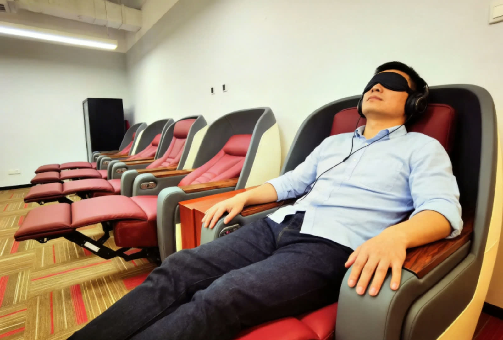
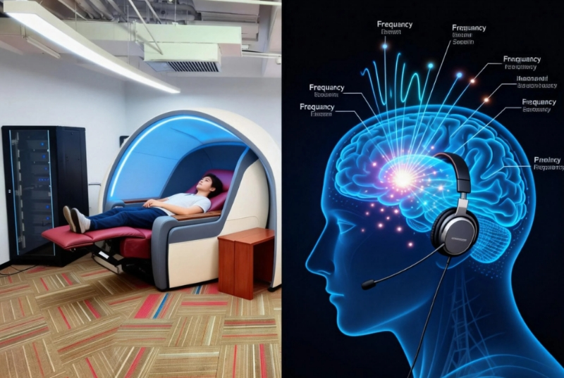

A public content hub for parents, learners, schools, and partners
The Insights section is designed for ongoing publishing. It supports long-tail SEO growth, strengthens brand authority, and helps visitors understand learning methods, exams, school cooperation, assessment flow, and project updates.
Four streams that can grow continuously
Parent questions
Practical content about forgetting, review rhythm, assessments, and learning routines.
Exam vocabulary
Content for school transitions, CET, TOEFL, and IELTS preparation.
School cooperation
Public-facing articles about implementation, cases, and rollout logic.
Updates
Program news, open days, local launches, and topical brand content.
Content built around real user questions
Each article is designed to answer questions that commonly appear in consultations, making the site more helpful for users and more scalable for search visibility.

Why Students Forget Vocabulary So Quickly—and What to Fix First
A practical guide for parents on learning state, review rhythm, and consistent vocabulary input.

How Schools Can Evaluate a Vocabulary Program
A practical framework for schools and education groups: outcomes, implementation, and parent communication.

A Smarter Vocabulary Plan for CET-4 and CET-6
A phased approach for university students and adult learners preparing for CET exams.

How to Build a Phased TOEFL and IELTS Vocabulary Path
A practical framework for learners targeting overseas exams with larger vocabulary demands.

Why the Learning Environment Matters for Vocabulary Retention
A closer look at attention, fatigue, and why learning state shapes vocabulary training quality.

How to Prepare for the Free Assessment
A simple guide for parents, students, and adult learners before their first on-site assessment.
Content streams that support SEO and brand authority
Learning method column
Long-term content on retention, state, pacing, and reinforcement.
Exam vocabulary
Targeted content for CET, TOEFL, IELTS, and school-stage exams.
School partnership notes
Cases, implementation, and public-facing explanations for schools and groups.
Assessment guides
Practical explainers that help learners know what to expect before booking.